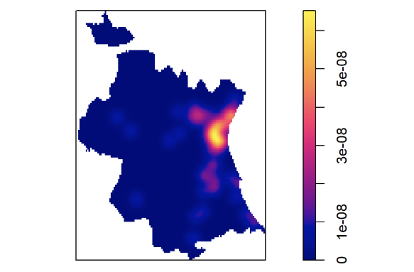

Usando RStudio y Quarto, limpié la base de datos de OSM sobre museos y monumentos de Valencia de manera que se eliminaran redundancias y se agruparan correctamente los edificios que estaban representados por múltiples polígonos. 🧽

Usando RStudio, Quarto y cálculos manuales, hice un estudio numérico y gráfico de sistemas de ecuaciones diferenciales lineales y no lineales con R, incluyendo transferencia entre tanques, campos de fases y soluciones oscilatorias. 🚰

Usando RStudio y Quarto, analicé la distribución de las ciudades pequeñas en la provincia de Valencia, con el objetivo de estudiar si dicha distribución seguía un patrón espacial aleatorio o no. 🎲